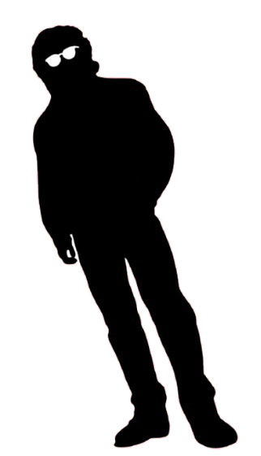

16y. // TI
LUCAS M YABIKU
Estudante Técnico de Tecnologia da Informação
"Transformo ideias complexas em soluções visuais simples e funcionais."

Estudante Técnico de Tecnologia da Informação
"Transformo ideias complexas em soluções visuais simples e funcionais."